传统瀑布式设计流程中最大的两个问题在于分工导致的设计过程中失真，以及应对变化能力弱，而不可否认的是，分工的优势在于执行效率，如果取消分工，虽然迫使设计师开始协作，避免了一定的失真，以及及早发现变化风险，但摆在眼前的，确实新的工作模式可能带来的工作效率低下的问题。
敏捷体验设计的方法论并不是简单打破传统的分工模式，而也在实践层次提供各种方法和工具，帮助设计师即保证了充分的协作，也避免了执行力下降的问题。而作为实操层面的文具选择，则是设计师协作的有效工具。
在过去的6年时间里，我一直采用这样的方式和客户一起做设计，大体上，我把我使用的文具分成以下5种，它们分别是：
- 便签贴纸（Post-it）
- 笔
- 纸
- 卡
- 胶泥
便签贴纸
便签贴纸大概是我们设计过程中最重要的文具，每次设计工作坊都会使用大量的贴纸，之所以使用便签贴纸，是因为：
- 小：为了避免过于细节的讨论，把想说的话限定在贴纸大小可以写下的字数；
- 可移动：将相同类型的观点进行整合或分组，以及调整优先级，可以随时移动的贴纸帮助我们整理思路；
- 聚焦：每一张贴纸上简短的内容都是一个主题，每次只讨论一个小的主题，避免无休止的细节讨论，以及跑题；
- 可抛弃：对于不需要当前讨论的话题，当引导者（facilitator）撕掉贴纸，其中产生的隐喻作用帮助大家再也不会在不需要讨论的话题上浪费时间。
贴纸的种类有好几种，分别有不同的作用：
超小型贴纸
这种贴纸（图1）的作用往往是用于当做标签使用，比如说表达交付周期的含义——被贴条的卡片按照不同颜色区分交付周期。
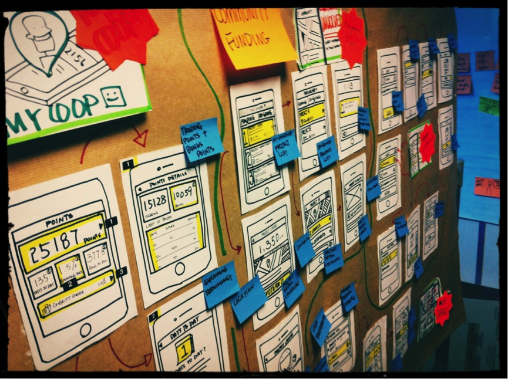
我们还习惯使用这种（图2）类似于胶带卷的贴条，随撕随贴，非常方便。
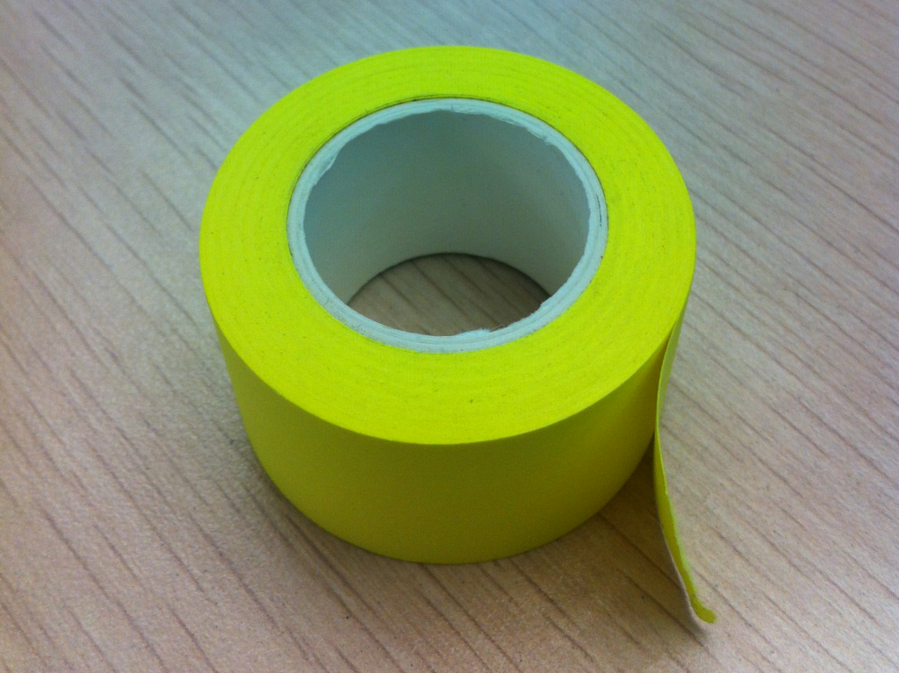
普通贴纸
这种贴纸一般有两种规格（图3），用量最大。
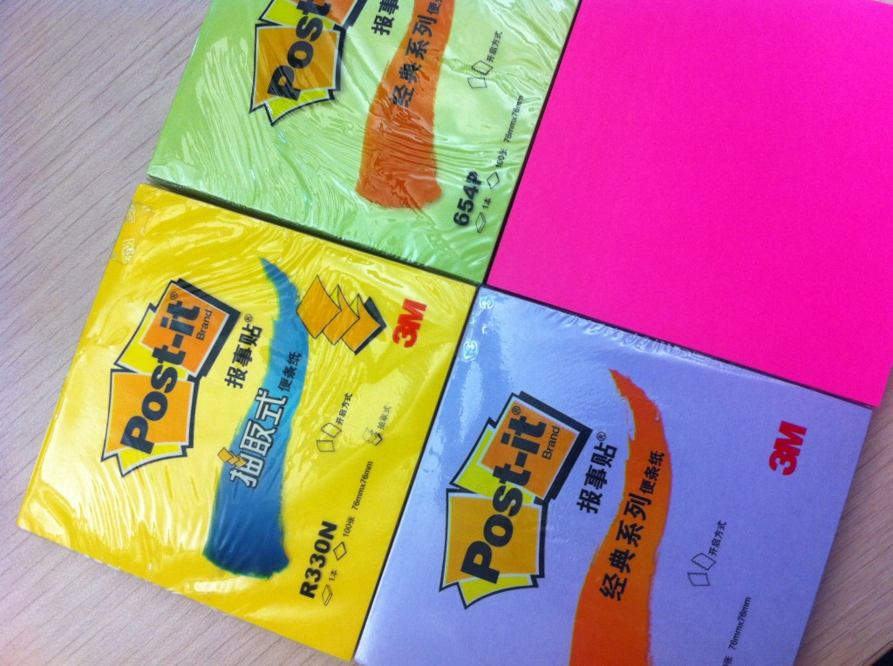
这种贴纸的颜色较为丰富，在使用过程中，我们通常做好的颜色编码（Color Coding），让最后的结果看起来更加整洁（图4），并能够快速定位到其中某个内容，我们经常使用的颜色编码有：
- 黄色：最常见的颜色，通常表达不带情感的普通信息和事实；
- 蓝色：技术信息、文档、优势、任务等；
- 绿色：资源、收入、优势等；
- 紫色：行为、分组、用户等；
- 红色：担忧、风险、限制、支出、问题等；
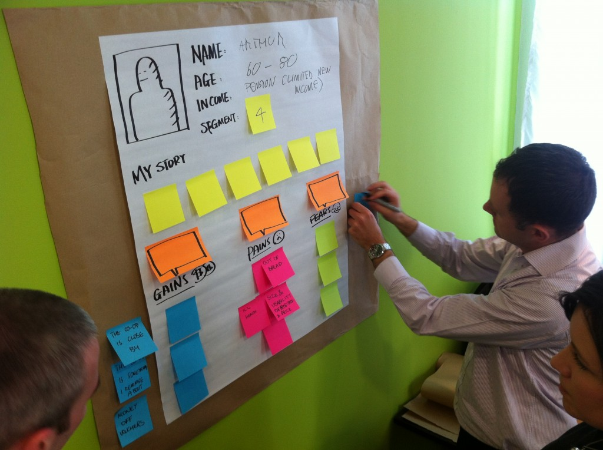
颜色的使用上并没有固定的要求，只需要全团队达成一致就好，此外，普通贴纸的使用还有如下一些需要注意的地方：
- 一张贴纸写一个点：贴纸的目的是让人一次只关注一个点，所以保证只写一点；
- 不要写在有胶的那面：很多人犯的错误是写在有胶的一面导致贴不上去；
- 写的不要过多也不要过少：写过多容易陷入细节的讨论，写过少让人摸不着头脑，还需要大量时间解释，图5中是两个过多过少都不好的例子；
- 拿正确颜色的马克笔把字写好：不要用过细的笔，尽量用反差颜色的笔写，同时一笔一划写清楚，避免看不出来写什么造成的浪费；
- 把贴纸对齐：对齐的贴纸有助于设计工作坊产出的内容更加清晰明确，提高沟通效率（图5）
- 不要图便宜买劣质品：好的贴纸撕下来不卷，劣质的贴纸撕下来就卷（图6）很容易脱落，请选择正品。
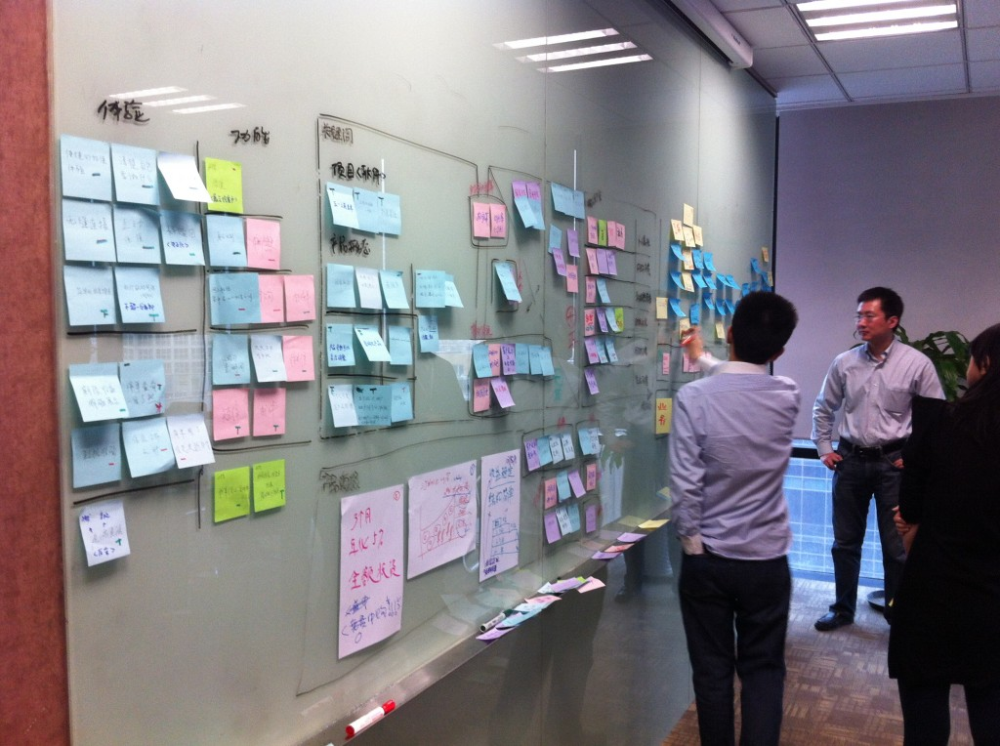
图5.贴纸如果整齐，整个工作坊的产出墙就显得整洁清楚，沟通质量也更高。
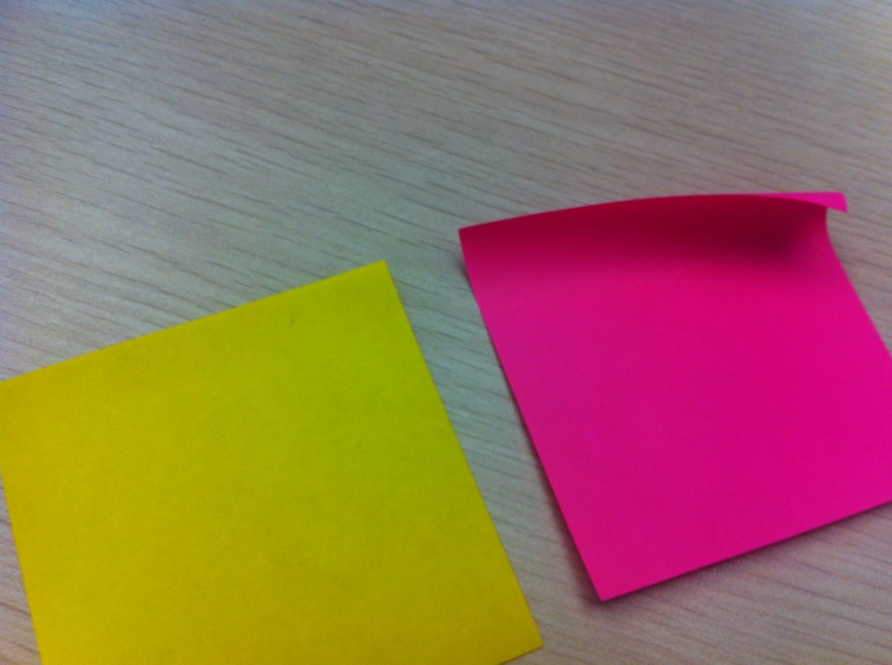 图6.右边是次品的便利贴，撕下来明显卷起，很难贴牢，左侧是3M的贴纸，撕下来不发卷。
特殊贴纸
还有一类有形状的贴纸我们也经常使用，它们从形状的角度赋予信息新的内容，特别是在构建体验地图这样大规模画布（图7）的时候，特别有用，一般我们使用的特殊贴纸有（图8）：
- 箭头：这种贴纸国内很少买到，很多时候我们需要拿普通贴纸剪成箭头的形状，它在构建流程图或体验地图时非常有效；
- 桃心：我们在表达客户价值、亮点、重要投票、领导层关注时，喜欢贴上一个桃心；
- 面包：个人不太理解生产厂商为什么做出面包形状的贴纸，但是我们拿它来记录过程中产生的文档。
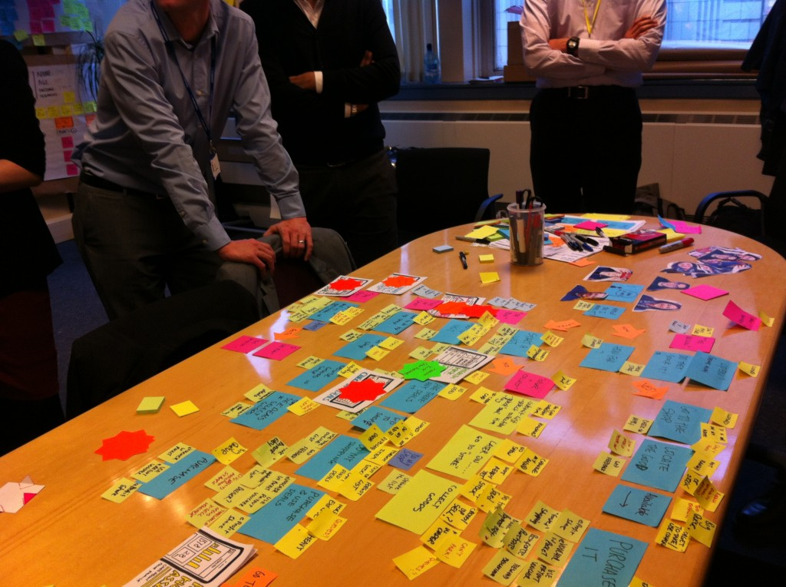 图7.在这样复杂的体验地图设计中，需要各种形状的特殊贴纸的支持。
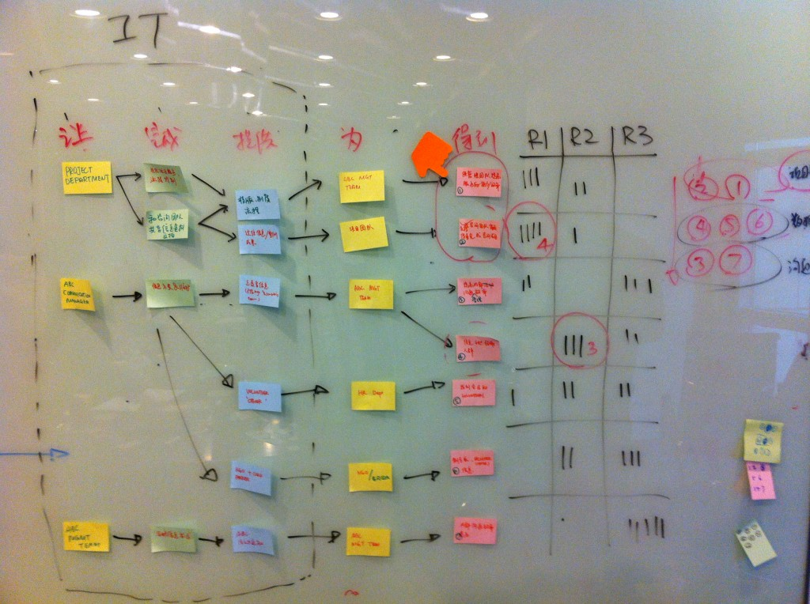 图8.注意我们在右上角使用的手指形状贴纸。
搭配大小、颜色、形状，我们可以利用这些贴纸表达一副内容丰富、但又结构清晰的信息画布，帮助我们在众多信息中抽丝剥茧，找到最应该切入的设计方向。
白板
白板是贴纸的承载物，是所有设计工作坊必备的物料之一，事实上，我们所有的工作文化，都围绕在白板周围，如果你参观ThoughtWorks任何一家分公司办公室（图9），都会发现墙壁上、承重柱上、储物柜的拉门上，都是白板，只要需要所有人都可以随时用几套贴纸在墙上写写画画。
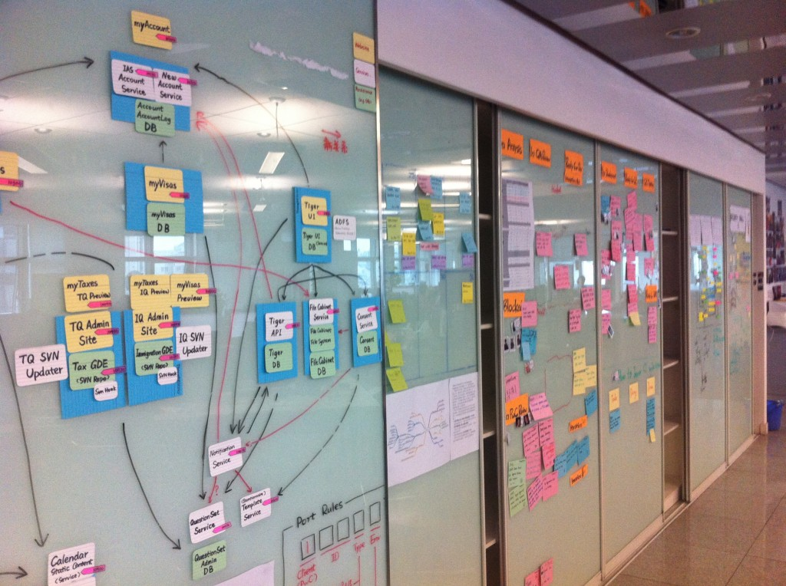 图9.典型的ThoughtWorks装修风格，可拉伸的柜门作为白板使用。
关于白板的使用有如下几点：
- 不要用错笔：分清楚马克油性笔和白板笔的区别，万一写错了可以用白板笔涂一遍，再擦；
- 盖上笔盖：除了铅笔任何笔都要盖上笔盖，这是每个家长都应该教会学龄前儿童的好习惯；
- 画完要擦：白板的寿命和你擦拭的次数成正比，请擦，另外请保证每块白板都有板擦。
事实上，越来越多的公司都采用整面墙贴玻璃（类似ThoughtWorks的装修风格）垫纸的方式作为白板，这样的白板效果更好，空间也更大（图10）。
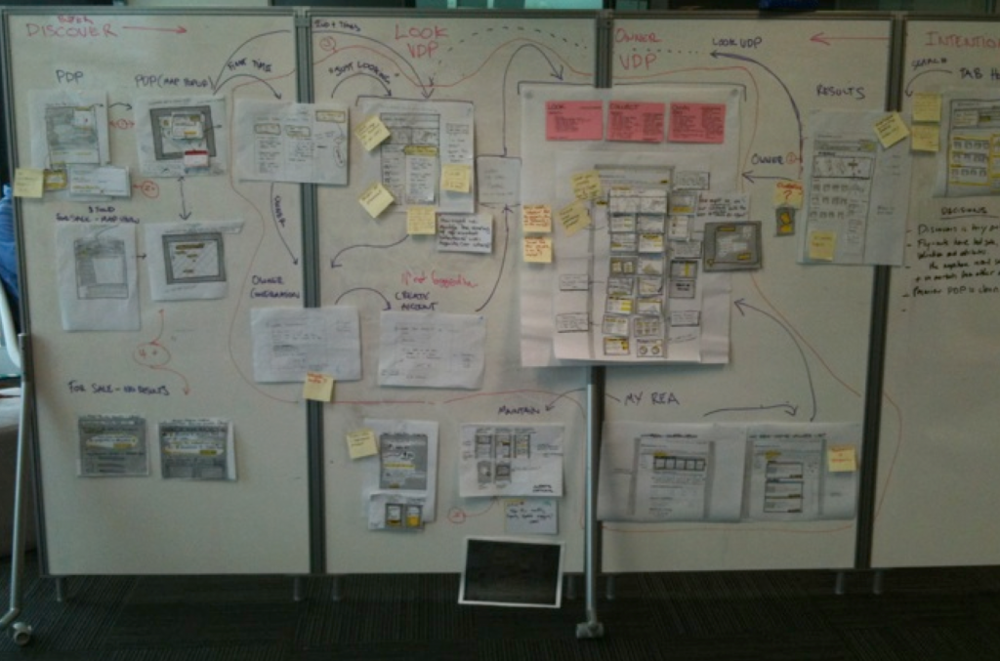 图10.这种屏风式的白板即可以做白板也可以在开放空间中各处一个相对独立的空间。
也有公司采用这种屏风式的白板（图11），即当做白板，又可以在开放空间内开拓出相对独立的空间，但据我所知，价格昂贵。
我们也曾经使用“魔贴”作为可以贴在普通墙上的白板，通常这是客户现场没有白板的备选方案，由于“魔贴”价格不便宜，重复使用次数不高，并不是我们的推荐产品。
笔
在明确设计方案前，我们避免一切电子化的输入设备，而更多鼓励设计师协作，笔的作用凸显。这里谈到的笔，根据不同用途大概分三种：
- 海报笔：专门用于画大型海报（Poster）的大号马克笔；
- 普通笔：主要用来在便签纸上写内容；
- 草图笔：主要就是针管/签字笔和阴影笔。
一般来说，有四种类型的笔就已经满足以上三种用途，它们分别是：
- 0.5mm左右针管笔或签字笔一支用于画草图界面：我通常的选择是Pilot Fineliner，以及韩国产的whiteman my color plus（图11.1）；
- 标准马克笔：最流行的便是Sharpie系列，用于在便签纸上写内容（图11.2）；
- 阴影马克笔：通常使用的是Chartpak Marker，有多种颜色可选择，用于描绘手绘草图的阴影部分（图11.3）；
- 平头大号马克笔：Sharpie系列中有一种平头大号的马克笔，我专门用来绘制海报的标题，国内很难买到，可用其他品牌代替（图11.4）
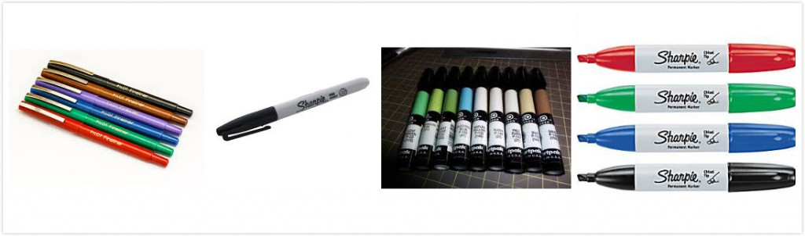 【图11.1-11.4】从签字笔到平头大号马克笔，Sharpie家族有各种类型的选择。
纸品
因为有了白板和便签纸，对纸的要求反而降低，纸的作用就变成：对白板和便签纸的延伸。通常我们需要使用的两种纸品主要是A1和A4两种大小的纸，以及索引卡。
A1纸的作用主要是对白板的延伸，以及产出物的记录（图12）；而A4纸和索引卡的主要作用则是辅助便签纸承载设计草图（图13）和用户故事（图14）的作用。
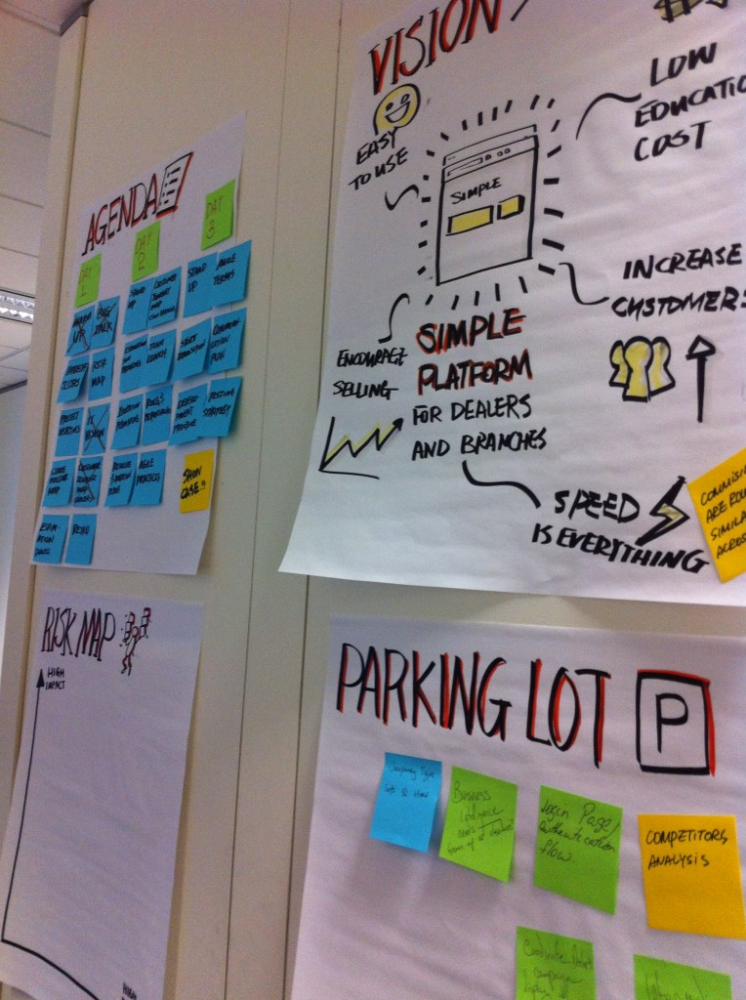 图12.A1纸的目的是将白板上装载不下的信息腾出来，作为产出物。
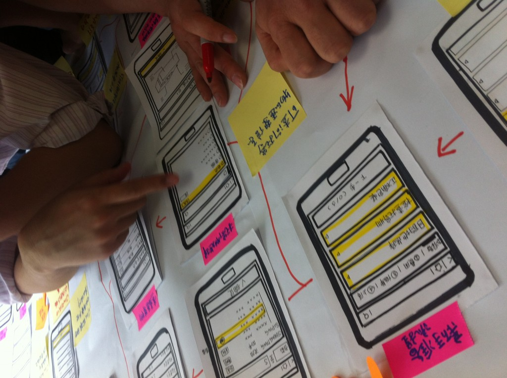 图13.将A4纸对折两次后画界面草图，并第一时间粘贴在白板上。
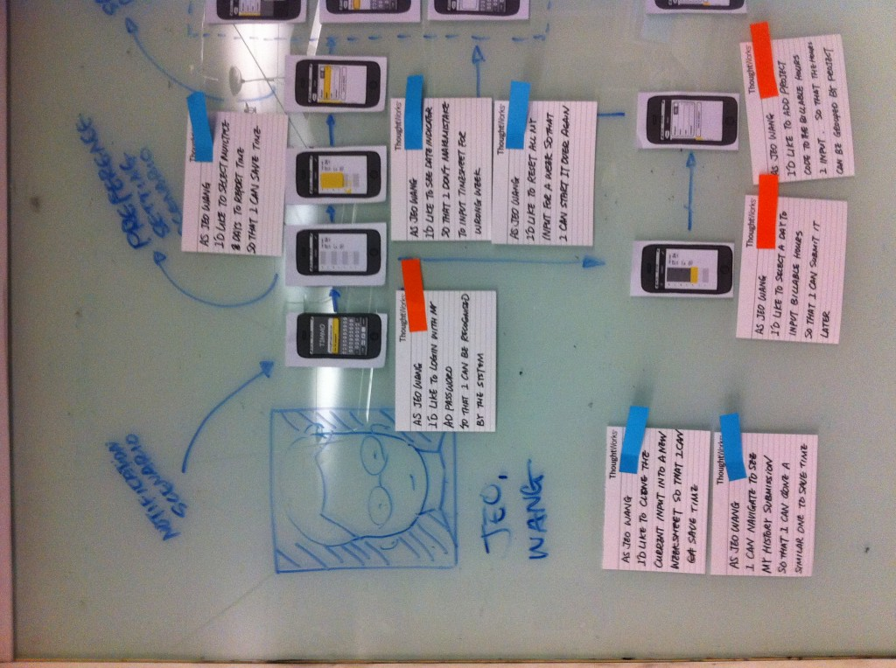 图14.从体验地图中梳理出用户故事，即开发任务，也粘贴在白板上，让技术人员充分了解上下文。
值得提的一点，索引卡上的用户故事将是设计师传递给交付团队重要的交付物，它也是敏捷软件开发方法中的重要元素之一（图15）。
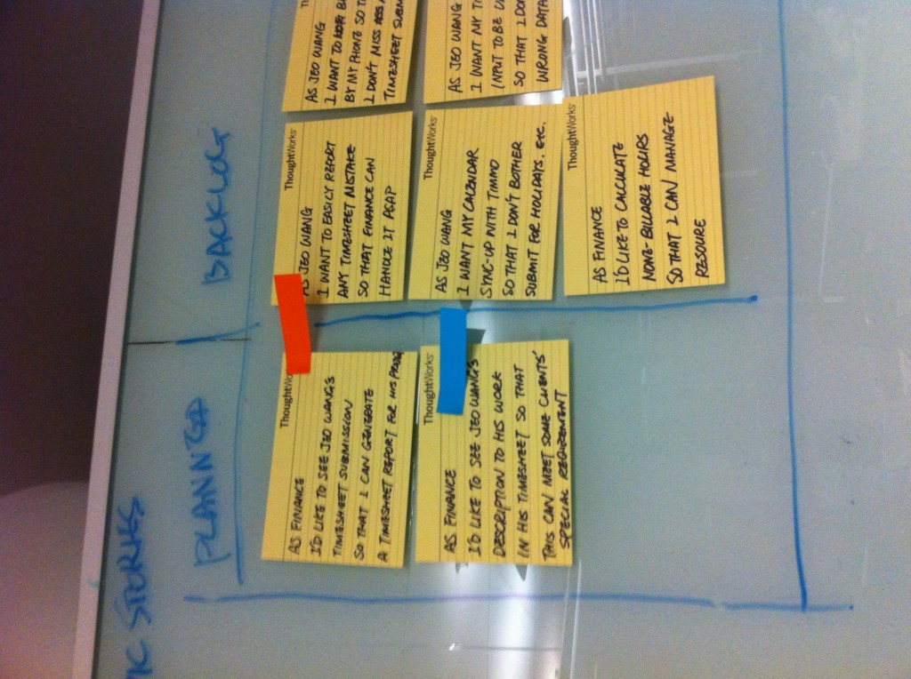 图15.敏捷开发环境中的索引卡片无处不在，这也成为敏捷体验设计的重要交付物之一
胶泥
胶泥的存在是因为纸品无法像便签贴纸一样贴在墙或者白板上，这种胶泥（Blu-Tac）源自英国百年品牌，无毒无味无贴痕，可以很方便地在任何表面黏贴各种纸或者索引卡片（图16）。
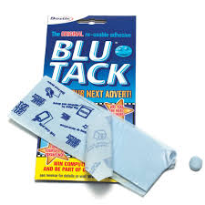 图16.百年品牌的蓝色胶泥，是我们经常使用的工具之一。
唯一需要注意的是，胶泥可以回收再利用，不需要用手刮它们下来，只需要用一块剩下的胶泥，轻轻一粘，残余胶泥就下来了。
写在最后
我曾经观察过一个传统团队是如何讨论需求的——一块已经看不见写的是什么的白板，需求提出者用一支快没墨水的白板笔，在白板上画着谁也不知道是什么的符号，最后的结果是“算了，大家看我写的文档就知道了”，再后来，一份100页左右的文档摆在大家面前。
我意识到，不是大家愿意写文档，而是大家害怕沟通，沟通的结果就是争执或者妥协，提供一些必要的工具和引导，能够让大家回到有效沟通的轨道上，用协作的方式，对设计方向快速达成一致。
当然，无论是电子或非电子的工具，其本质还是工具，真正起决定性因素的还是人本身，决定设计的不是工具或者流程，而是设计师个体，这便是设计思维和设计实践共同解决的问题，而设计工具的部分作用，只是沟通的润滑剂。